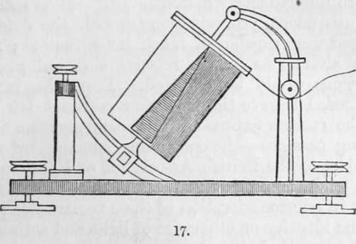

Chapter IV. On The Photographic Registration Of Philosophical Instruments. Section I. Photographic Registration
Description
This section is from the book "A Manual Of Photography", by Robert Hunt. Also available from Amazon: A Manual of Photography.
Chapter IV. On The Photographic Registration Of Philosophical Instruments. Section I. Photographic Registration
On The Photographic Registration Of Philosophical Instruments And The Means Of Determining The Variations Of Actinic Power, And For Experiments On The Chemical Focus.
There are so many advantages attendant on self-registration, as to make the perfection of it a matter of much interest to every scientific enquirer. The first who suggested the use of photographic paper for this purpose was Mr. T. B. Jordan, who brought the subject before a committee of the Royal Cornwall Polytechnic Society, on the 18th of February, 1839, and exhibited some photographic registers on the 21st of March of the same year. The plan this gentleman adopted was to furnish each instrument with one or two cylinders containing scrolls of photographic paper. These cylinders are made to revolve slowly by a very simple connection with a clock, so as to give the paper a progressive movement behind the index of the instrument, the place of which is registered by the representation of its own image.
The application of this principle to the barometer or thermometer is most simple ; the scale of either of these instruments being perforated, the paper is made to revolve as close as possible to the glass, in order to obtain a well-defined image. The cylinder being made to revolve on its axis once in forty-eight hours, the paper is divided into forty-eight parts by vertical lines, which are figured in correspondence with the hour at which they respectively arrive at the tubes of the instruments. The graduations on the paper correspond to those on the dial of the barometer or scale of the thermometer, and may be printed on the paper from a copperplate, or, what is much better, may be printed by the light at the same time from opaque lines on the tube, which would of course leave a light impression on the paper : by this means we should have all that part of the paper above the mercury darkened, which would at the same time be graduated with white lines, distinctly marking the fluctuations in its height for every minute during daylight, and noting the time of every passing cloud.
Mr. Jordan has also published an account of his very ingenious plan of applying the same kind of paper to the magnetometer or diurnal variation needle,* and several other philosophical instruments; but as these applications were not at the time entirely successful, owing principally to the difficulty of finding a suitable situation for so delicate an instrument, it is thought unnecessary to occupy these pages with any particular description of the arrangements adopted, which, however, were in all essential points similar to those employed by Mr. Ronalds, and adopted in some of our magnetic and meteorological observatories. Those of Mr. Brooks are of somewhat more refined a character, and require special notice.
A reflector is attached to the end of a delicately suspended magnet; this reflects a pencil of strong artificial light upon photographic paper placed between two cylinders of glass, which are kept in motion by a small clock arrangement. As the paper moves in a vertical direction whilst the magnet oscillates in a horizontal one, a zigzag line is marked on the paper ; the extent of movement on either side of a fixed line showing the deviation of the magnet for every hour of the day. By means of this arrangement many most remarkable phenomena connected with terrestrial magnetism have been discovered, and since the methods of adjustment have been rendered more perfect, and the invention applied to a great variety of instruments, we may hope for yet more important results.
The registration of the ever-varying intensity of the light is so important a subject, that it has occupied the attention of several eminent scientific observers. Sir John Herschel and Dr. Daubeny have applied their talents to the inquiry, and devised instruments of much ingenuity for the purpose. The instrument constructed by Sir John Herschel, which he has named an actinograph, not only registers the direct effect of solar chemical radiation, but also the amount of general actinic power in the visible hemisphere; one portion of the apparatus being so arranged that a sheet of sensitive paper is slowly moved in such a direction, that the direct rays of the sun, when unobscured, may fall upon it through a small slit made in an outer cylinder or case, while the other is screened from the incident beam. The paper being fixed on a disc of brass, made to revolve by watch-work, is affected only by the light which " emanates from that definite circumpolar region of the sky to which it may be considered desirable to limit the observation," and which is admitted, as in the other case, through a fine slit in the cover of the instrument.
* See the Sixth Annual Report of the Royal Cornwall Polytechnic Society.
Mr. Jordan has devised an instrument for numerically registering the intensity of the incident beam, which appears to have some peculiar advantages ; a description of which I shall take the liberty of transcribing. Figure 17 is an elevation of the instrument; it consists of two copper cylinders supported on a metal frame : the interior one is fixed to the axis and does not revolve, being merely the support of the prepared paper; the exterior cylinder is made to revolve about this once in twenty-four hours by a clock movement. It has a triangular aperture cut down its whole length, as shown in the figure, and it carries the scale of the instrument, which is made to spring closely against the prepared paper. This scale or screen is composed of a sheet of metal foil between two sheets of varnished paper, and is divided into one hundred parts longitudinally, every other part being cut out, so as to admit the light to the prepared paper without any transparent medium intervening. The lengths of the extreme divisions, measuring round the cylinder, are proportioned to each other as one to one hundred ; consequently the lower division will be one hundred times longer passing over its own length than the upper one over its own length, and the lines of prepared paper upon these divisions will, of course, be exposed to the light for times bearing the same proportion to each other.
Now, as the sensitiveness of the paper can readily be adjusted, so that the most intense light will only just tint it through the upper division during its passage under the opening, and the most feeble light will produce a similar tint through the lower division during its passage, the number of lines marked on the paper at any given time will furnish a comparative measure of the intensity of solar light at that time, and may be registered as so many degrees of the Heliograph, the name Mr. Jordan has given his instrument, just as we now register the degrees of the thermometer.
An instrument of this kind was made by me for the British Association, and experiments carried on with it, at intervals, for some years. Many of the results were very curious, but the instrument being placed at the Observatory at Kew, the observations were unfortunately discontinued.* It is believed that, with an instrument properly constructed, the details of the one employed were capable of much improvement; many very remarkable alterations in the relative chemical power of the solar radiations would be detected. From the indications I have obtained, I believe there exists a constant law of change, and that the correct expression of the phenomena is given in the following passages—the concluding summary of my Report on this subject to the British Association at Edinburgh:—
" It will be evident that the question which assumes the most prominence in our consideration of these remarkable phenomena is that of the identity or otherwise of light and actinism.
" Fresnel has stated that the chemical effects produced by the influence of light are owing to a mechanical action exerted by the molecules of aether on the atoms of bodies, so as to cause them to assume new states of equilibrium dependent on the nature and on the velocity of the vibrations to which they are subjected.
" Arago says, it is by no means proved that the photogenic modifications of sensitive surfaces result from, the action of solar light itself. These modifications are perhaps engendered by invisible radiations mixed with light properly so called, proceeding with it, and being similarly refracted.
" These views fairly represent the condition in which the argument stands, and a yet more extensive set of experiments seems to be necessary before we can decide the question. It appears, however, important that we should dismiss, as completely as possible, from our minds, all preconceived hypotheses. The phenomena were all unknown when the theories of emission and of undulation were framed and accepted in explanation of luminous effects; and it will only retard the discovery of the truth, if we prosecute our researches over this new ground, with a determination to bend all our new facts to a theory which was framed to explain totally dissimilar phenomena".
* A new instrument has been constructed, and a regular series of observations are now in progress.
Continue to:
- prev: The Theory Of The Daguerreotype. Part 6
- Table of Contents
- next: Section II. Instruments For Measuring Actinic Variations, Etc